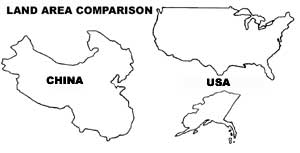

Ecoscience: China's Population Crisis
Reproduction, overpopulation, land use and other problems in the Orient.
by Paul and Anne Ehrlich
May/June 1983
Paul Ehrlich (Bing Professor of Population Studies and Professor of Biological Sciences, Stanford University) and Anne Ehrlich (Sen ior Research Associate, Department of Biolog ical Sciences, Stanford) are familiar names to ecologists and environmentalists everywhere. But while most folks are aware of the Ehr lichs' popular writing in the areas of ecology and overpopulation (most of us-for I instance -have read Paul's book The Population Bomb) ... few people have any idea of how deeply the Ehrlichs are involved in ecological research (the type that tends to be published only in technical journals and college texts). That's why we're pleased to present this reg ular semitechnical column by these well-known authors/ecologists/educators.
China faces a very serious problem, the crux of which can be seen by examining a few sample statistics. That country, which is about the size of the United States, has more than four times as many people and approximately one-half the arable land' In addition, its weather is less stable and its environment has suffered far more abuse than ours ... plus-with nearly a quarter of Earth's people-it possesses only a twentieth of our planet's fresh water!
And, as its own government recognizes, many of the problems faced by the People's Republic of China can be traced directly to the nation's overpopulation. In the 1960's, Premier Zhou Enlai stated, "If we control population development, we will obtain benefits. Not only will it reduce the burden of the state, increase (capital) accumulations, and enable our country to become wealthy and powerful more quickly ... it will also raise the scientific level of our country so that it will catch up with and surpass that of the [advanced countries] more quickly, and accelerate the speed of our industrialization."
This has not always been the state's position, though. In 1949, Mao Zedong was parroting the tired Marxist line contending, in essence, that properly organized socialist states had nothing to fear from population growth.
However, by 1953 China's first census showed that its population was approaching 600 million souls, and was growing at a rate of 2% per year ... which would have produced a population of about 1.2 billion by 1990. These projections galvanized the nation's leadership, and in 1957 Mao proclaimed "population growth must be controlled".
China had already launched its first campaign to accomplish this, but it was brought to a halt by the 1958-1960 "Great Leap Forward". This was a crash economic program whose most famous feature was the promotion of "backyard" steel production ... a total fiasco of inefficiency and disorganization. As a result of the program, industrial and agricultural production decreased and famines occurred.
In the early stages of what turned out to be a "great stagger backwards", pronatalism had a resurgence, and there were even discussions of possible future labor shortages. Ironically, however, growth was much reduced during this period ... as birth rates plunged and death rates soared in response-it has been presumed-to the general disruption of Chinese life. It's even possible that, for a brief period, the nation reached zero population growth (ZPG).
With the advent of economic recovery in the early 1960's, a second population control campaign was launched ... but it-in turn-was disrupted by the start of the 1967 "Cultural Revolution". Rampaging Red Guards destroyed the economy to the extent that the manufacture and distribution of contraceptives broke down, and the weakened level of party control allowed earlier marriages. In addition, this social upheaval all but destroyed scholarship in China, and it traumatized much of the populace.
"LATER, LONGER, FEWER"
By 1971, however, the nation was firmly back on the road to birth control, a path which it continues to follow today. That year, the "Later, Longer, Fewer" campaign called for delayed marriage, greater spacing between babies, and fewer children in total. In 1979, still unsatisfied with the results, the party instituted the "One Child" campaign, which asked that each couple have only a single offspring.
Since Mao's death in 1976, the Chinese leadership has given top priority to the "Four Modernizations": agriculture, industry, defense, and science. This program's goal has been to raise the per capita gross national product from $250 (U.S.) to $800 by the year 2000 (as contrasted with the current U.S. figure of about $6,500) ... all expressed in deflated 1972 dollars.
The Chinese leadership, then, was clearly shocked when (in 1979) they were faced with evidence that China's population was even larger than previously estimated (perhaps already over a billion). This cast doubt upon many of the regime's claimed economic successes, since they had been expressed in terms of increases in per capi ta production. Of course, if the number of people had been underestimated, the per capita figures were overestimated.
What's more, projections indicated that, even given the considerable success of the, "Later, Longer, Fewer" campaign, the population would still reach 1.28 billion by the year 2000. The "One Child" campaign was designed to hold this figure below 1.2 billion. (That might seem a small reduction until one realizes that it means the nation would have to deal with 80 million fewer people.)
ONE COUPLE, ONE CHILD
Can China's latest program be successful? Well, it'll be difficult for it to work in a nation where marriage is culturally mandatory, children are much loved, and the desire for at least one son is very strong ... but a complex and locally varying system of incentives and penalties is now in place, and may help. Parents who pledge to have only one child, for example, get an allowance for health care for five years that amounts to more than 10% of their annual income. Such individuals also get priority enrollment in nursery schools and exemption from school tuition.
In contrast, families with two or more children may have their salaries reduced 10% (for from 5 to 14 years!), and have to face strong "antinatalist" social pressures. "Planned birth" certificates are issued by local populationplanning committees, and these must be shown at all prenatal exams, Births without these papers are considered "unplanned" . . . even if the couple is otherwise qualified (by being childless) to have the baby.
The program is also supported by the easy availability of contraceptives and "backup" abortions. About 50% of China's contraceptive users employ IUD's, while 30% have been sterilized. (In the cities, about 25% use the pill . . . in the country, only about 5%.) Abortion is officially for use only in the case of contraceptive failure. The Chinese rate, in 1978, was 318 abortions for every 1,000 live births . . . lower than the 1977 U.S. figure of 385 per 1,000.
And China's population control program has had stunning success so far. For example, the birth rate dropped nearly 50% between 1971 and 1979. Chinese demographers put the 1981 birth rate at approximately 18 per 1,000, and the death .... at 6 per 1,000. (Comparable figures for India were 36 and 15... and for the United States, 16 and 9.)
The results of this achievement are quite evident, too. When we were in China in 1982, there were very few infants or pregnant women to be seen. In contrast, teenagers and young adults seemed to make up a major portion of the population.
In spite of all this progress, though, there appear to be more problems ahead. Chen Muhua, the Vice-Premier for Family Planning (and the highest-placed woman in the government) has stated, "As a socialist country, China practices planned economy. This requires production of human beings, like production of material goods, proceed in a planned way." But rural groups object that the one-child ideal jeopardizes their chances for old-age security that more offspring could provide, and the army fears a future lack of available young men. Furthermore, the return of responsibilities for farm plots to peasants has reinforced the value of children in rural areas. Farmers now say, "We grow our own grain. If we produce more children, that's our con, cern." In some cases, women clandestily have the IUD's that have been forced on them removed.
But the government clearly means business. In Guangdong Province, about half of 100,000 pregnant women who already had at least one child were compelled to have abortions ... some quite late in their pregnancies. However, even an "success" in its population control program could bring China still other problems.
Suppose, as some of the leadership wish, ZPG is reached around the year 2000 at a population of 1.2 billion. If that happens, by about 2035 the ratio of dependent old folk to productive adults and youngsters will be extremely high. There will be twice as many people in their 60's as there will in each age decade below 40.
Even so, the disruption caused by such an unbalanced age composition might be considerably less than that which will face China if it does not promptly curb its population growth. Because, as we'll discuss in our next column, that nation is already pressing hard on its natural resources and environment.
More details on China's population situation can be found in Population Reports, vol. 10, January/February 1982. For age structure projections, see A.J. Coale's "Population Trends, Population Policy, and Population Studies in China" (Population and Development Review, vol. 7, pages 85-97, March 1981).
The Ehrlichs' work is supported in part by a grant from the Koret Foundation of San Francisco.
Would you like to study East African wild life with Anne and Paul Ehrlich? See Page 60 for more information on an excitin g tour.
 STAFF PHOTO |
 |
|